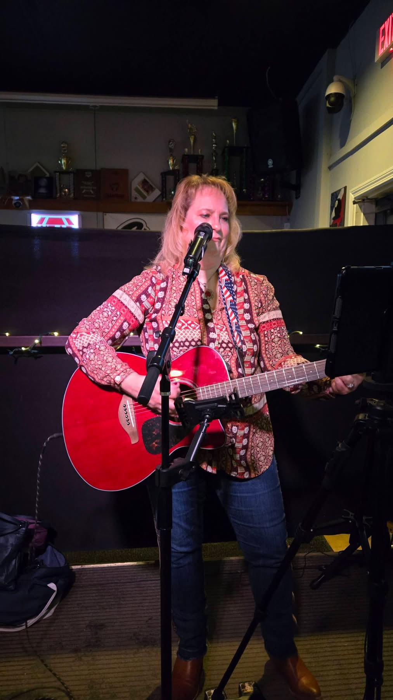

Mixed spanning many time periods • Standish, Maine

I’ve been playing music since the age of 4. This is my hobby; my joy and my “brain therapy!” I am a survivor of a Subarachnoid Hemorrhage retiring me from many successful years in the Insurance Industry! I can be very melancholic, at the same time I can “Rock it!” I play as a “solo”, “duo”, and for special projects will work to provide a “band of peers.” My solo performances include mostly me and my guitar, or adding a backing track to allow other instruments excluding rhythm guitar. (This has been well received) The name I chose (The Music Company) to share my cover performances gives me the flexibility to provide options, thought most know me by Michelle Roy Mitchell or “Michi!”
🎤 Available for bookings
📍 Based in Standish, Maine